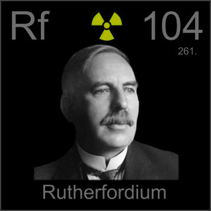

HOME
PREVIOUS
NEXT

Rutherfordium
Atomic Weight: 267[note]
Density: N/A
Melting Point: N/A
Boiling Point: N/A
Rutherfordium, half-life 65 seconds, is one of two elements in a row named after an Ernest (Rutherford in this case). Sorry, I can't say much more about it--except that none is likely to exist right now.